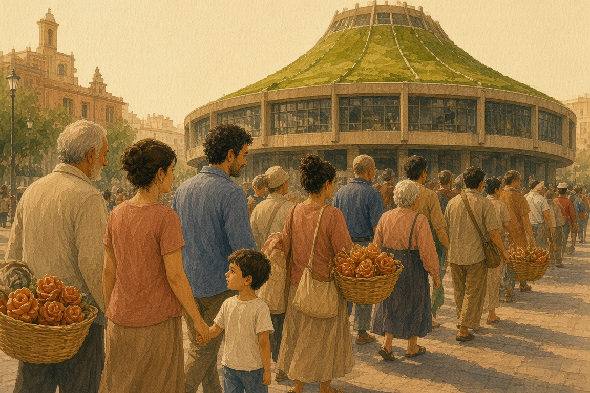

- B2
- Un santuario
Una cola que no es solo fe
El 12 de diciembre, en la Villa de Guadalupe, la fila es tan elocuente como el santuario: fe, sí, y también identidad.
Included for Edison Spanish students · Book a trial class
The full reading, its translation, glossary, audio and exercises are part of the student materials.